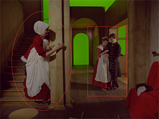

的 椭圆 , 矩形 ,和 尖头矩形 工具允许您绘制椭圆或矩形贝塞尔形状。矩形和尖头矩形最初看起来完全一样，但是如果你移动一个或多个控制点，你可以看到尖头矩形总是有尖角，没有切线。
创建后，椭圆、矩形和尖头矩形可以像普通贝塞尔形状一样进行编辑。
|
 |
|
这里，一个椭圆和一个矩形
|
| 1。 | 右键单击 贝塞尔 在 RotoPaint 工具栏中选择 椭圆 工具 , 矩形 工具 ,或 尖头矩形 工具 . |
| 2. | 在查看器顶部的 RotoPaint 工具设置中，为形状选择颜色、混合模式、不透明度和其他设置。(有关可用选项的信息，请参见 编辑现有笔触/形状属性 )。 |
| 3. | 或者，在 RotoPaint 工具设置中设置形状的寿命。(有关可用选项的信息，请参见 编辑现有描边/形状计时 )。 |
| 4. | 单击并拖动查看器以绘制椭圆或矩形形状。 |
如果要从中心向外绘制形状，请按 Ctrl / Cmd 转变 当你拖着的时候。
如果你想创建一个完美的圆 椭圆 工具或正方形 矩形 工具，按住 转变 同时画你的形状。
|
按住
转变
同时绘制
|
|
|